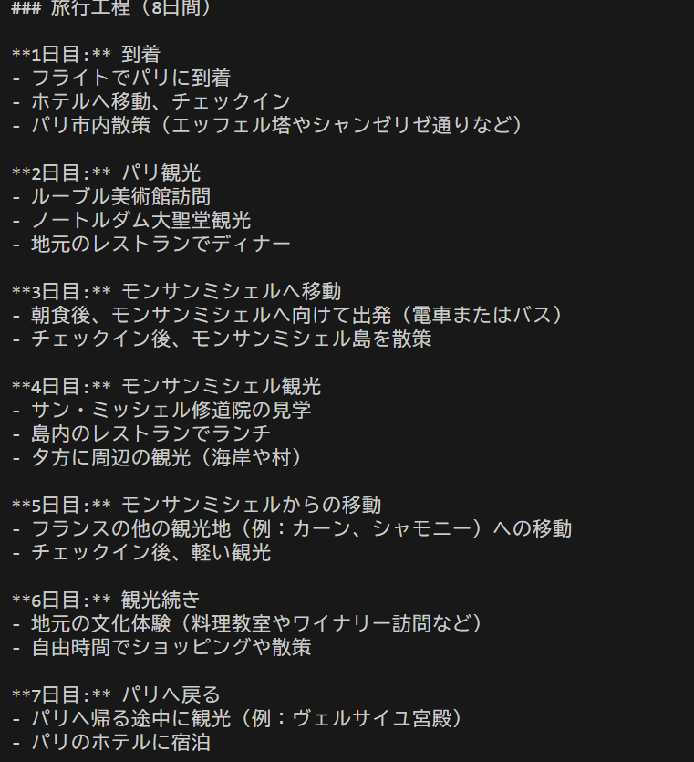

特徴を明確にするために、旅行代理店の工程とこのコードで出てきた計画を比べてみたいと思います。

今回参照するクラブツーリズムの旅行のパンフレットです
マーカーが引いてある日程、その右の工程を比較します。
マーカーが引いてある日程、その右の工程を比較します。

chatGPTに聞いた条件です。
a=行きたい国
b=絶対行きたい場所
c=予算
d=人数
e=日数
f=自由記述
a=行きたい国
b=絶対行きたい場所
c=予算
d=人数
e=日数
f=自由記述


比較の結果
旅行代理店の計画と遜色ない予定が出来上がったが、
今回のプログラムでは細かいところまで詰めていく作業ができない点
まだ、旅行代理店のパンフレットのほうが有用に感じた。
今回のプログラムでは細かいところまで詰めていく作業ができない点
まだ、旅行代理店のパンフレットのほうが有用に感じた。
まとめ
- 今回のプログラムは、自分の生きたい場所の主張ができるという特徴を持っていて
「ツアーは自由度がなく嫌いだけど自分で考えるのはめんどくさい」という人にとって
パンフレットと差別化を図ることができていて良い感じだと思った。 - 具体性と実際に実行できるのかという点に疑問があり、
もう少し具体的な予定を立てられるように改良できたら良いと思う。